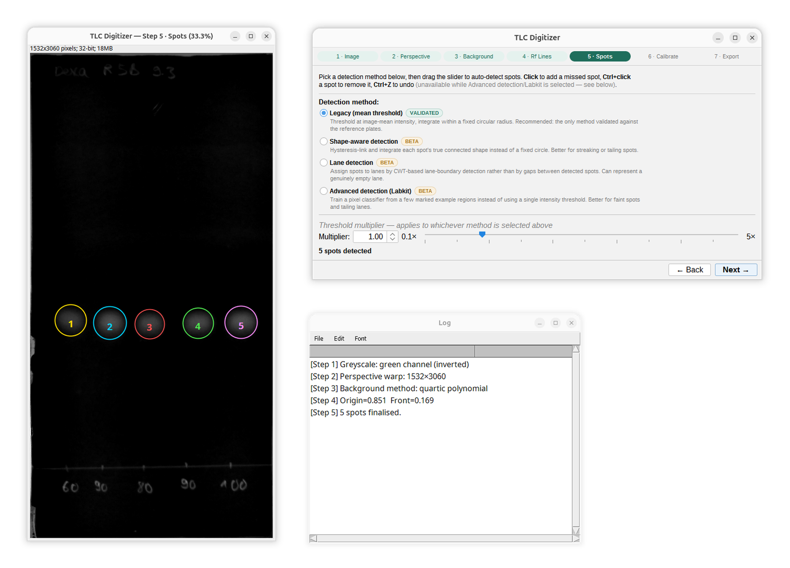
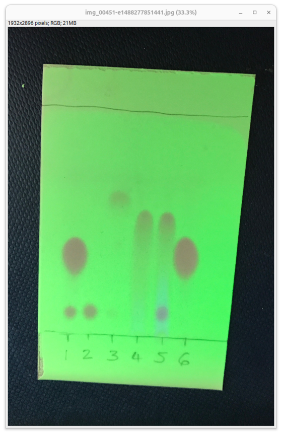
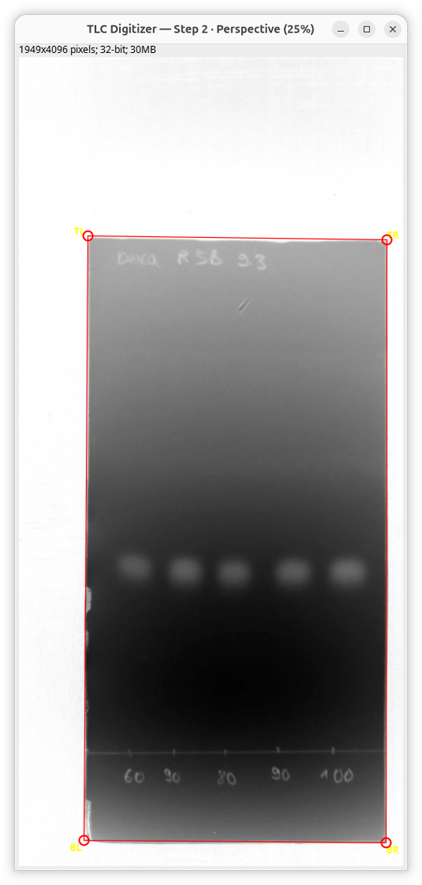
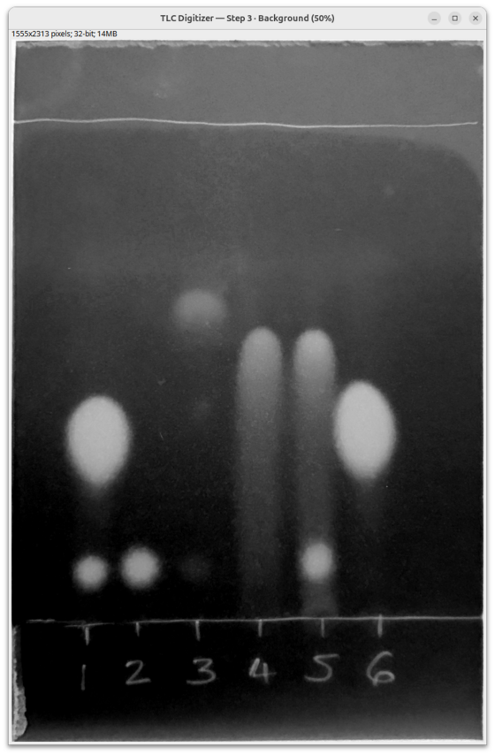
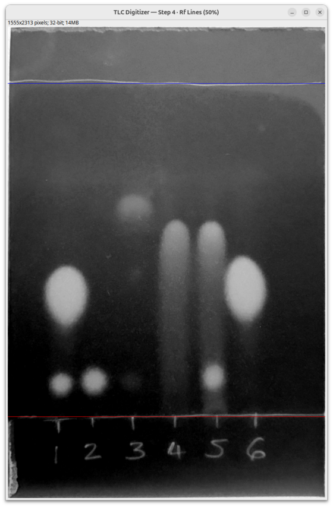
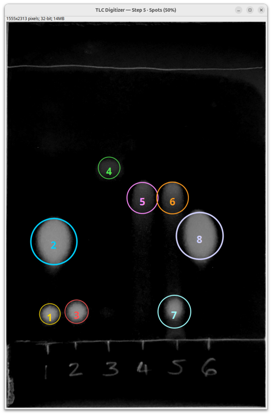
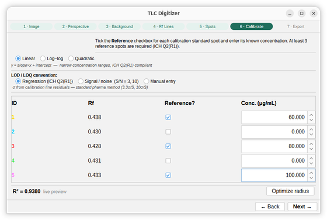

TLC Digitizer reads a photograph of a developed thin-layer chromatography plate — smartphone or flatbed scanner — and returns Rf values, integrated spot intensities, and calibration-derived concentrations, with every analysis parameter logged to a reproducible CSV.

The wizard, step by step — run here on the UV254 dexamethasone reference plate published with the TLCyzer paper, so the analysis shown can be compared against theirs. Directly derived from the peer-reviewed TLCyzer algorithm (Hauk et al., Scientific Reports 2022), with additions from the qTLC and qtlc literature.
Convert the raw photo to greyscale — luminance, or green-channel for UV-fluorescence plates like this one.

Corners are auto-detected via Hough line detection and shown as draggable handles for manual correction.

Quartic polynomial, white top-hat, or Savitzky-Golay correction flattens uneven illumination.

Mark the origin (red) and solvent front (blue) — every spot's Rf is computed relative to these two lines.

Auto-detect, then confirm or adjust. Five spots found here at the default threshold; any missed spot can be added with a click, and a false positive removed with Ctrl+click.

Tick ≥3 reference spots, enter known concentrations. Linear/log-log/quadratic fit, with live R², LOD and LOQ.

Every spot, every calibration parameter, every analysis setting — written to a CSV, an annotated PNG, and a TIFF with the CSV embedded in its metadata.
| spot_id | rf_value | integration_value | assigned_conc. | reference? |
|---|---|---|---|---|
| 1 | 0.362 | 165,315 | 59.26 | 60.0 (ref) |
| 2 | 0.355 | 249,461 | 97.89 | — |
| 3 | 0.352 | 214,219 | 81.71 | 80.0 (ref) |
| 4 | 0.354 | 228,136 | 88.10 | — |
| 5 | 0.355 | 251,953 | 99.03 | 100.0 (ref) |
Real export, MOESM2 — R² = 0.9945, LOD 15,091, LOQ 45,732 (plus corner coordinates, background method, threshold, and every other setting, logged in the CSV header).
Step 5 offers four strategies as a single-choice option. Legacy is the default and the most tested; the rest are opt-in and explicitly labelled beta in the UI.
Fixed circular ROI from mean-threshold connected components. Recommended default.
Hysteresis linking + watershed peak separation — integrates a spot's true connected shape, better for streaking or tailing lanes.
Continuous-wavelet-transform lane-boundary detection, independent of spot detection — can represent a genuinely empty lane.
Random-forest pixel classifier trained from a handful of user-marked regions per image — strong on faint spots and tailing lanes.
Validation here is treated as an ongoing programme with published gates, not a box that gets ticked once. Releases are numbered by evidence rather than features: the analysis pipeline is already complete, so what stands between this and a 1.0 is what we can demonstrate about it. The roadmap states each gate, written so that it can fail.
Three kinds of data feed that, because each answers a different question. Synthetic plates, generated in code, give exactly known ground truth, so detection is scored against a target rather than an opinion. Real plate photographs act as regression fixtures against the sensor noise, uneven lighting and off-axis framing that synthetic data cannot reproduce; these come from our own bench and from other labs, and the corpus grows as people contribute. Plates with certified analyte concentrations are what quantification accuracy actually rests on, and they are the scarce input everywhere in this field — which is why the next milestone is about widening that set rather than polishing numbers on the current one.
Two things we would rather say than have you discover. Any accuracy figure derived from a handful of plates measured in one laboratory says more about those plates than about the method. And we have measured that quantification is sensitive to how the plate corners are placed, so a figure quoted from a single placement would overstate its reproducibility between analysts. Numbers will appear here when they carry weight.
If you run TLC with reference standards and would be willing to share plate images, that is the single most useful thing anyone can contribute. Replicates of one compound are worth more than variety.
./mvnw packagetarget/tlc-digitizer-*.jar into your Fiji plugins/ folderRuns as Plugins → TLC → TLC Digitizer. Build from source:
git clone https://github.com/katalystnord/tlc-digitizer-fiji.git
cd tlc-digitizer-fiji
./mvnw packageThe dexamethasone plate shown throughout this page is the supplementary reference image from Hauk et al. (2022).